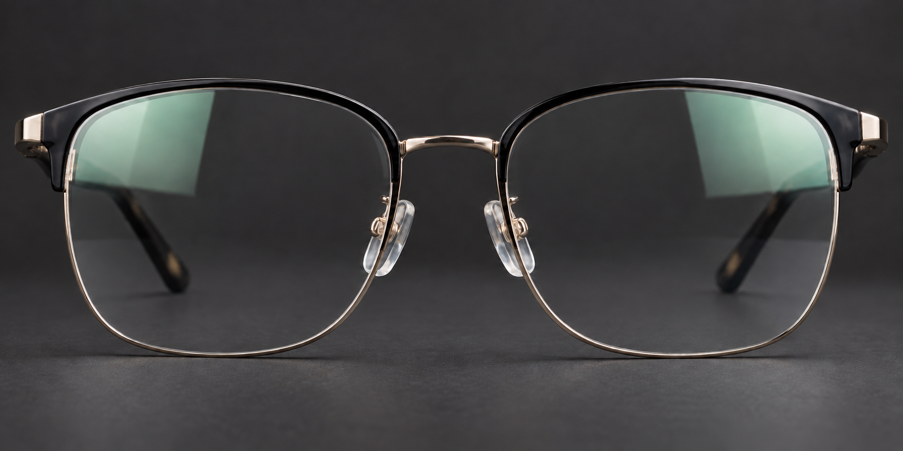

Atenda melhor. Venda com confiança.
Use o assistente para conduzir a conversa ou abra uma demonstração rápida durante o atendimento.
Assistente OWN
Tratamentos e recursos
Escolha o assunto que deseja explicar ao cliente.
Camadas antirreflexo
Mostre que não é apenas estética: as camadas melhoram transparência, limpeza, resistência e conforto.

Lentes fotossensíveis
Arraste o controle para ver as lentes reagindo à intensidade do sol em uma situação real.
Uma lente, diferentes ambientes
A lente escurece sob radiação UV e ajuda a reduzir o desconforto da claridade. Em ambientes internos, retorna gradualmente ao estado claro.
Espessura e materiais
Compare como o índice influencia lentes positivas e negativas.
Positiva
mais espessa no centroNegativa
mais espessa nas bordasFiltro de luz azul
Uma demonstração simples de como a lente atua sobre parte da luz azul emitida por telas.
Mais conforto na rotina digital
O filtro de luz azul reduz a passagem de parte da luz azul-violeta através da lente. Pode ser combinado com antirreflexo para melhorar transparência e conforto diante de telas.
Coloração das lentes
Apresente tonalidades e acabamentos de forma simples. A intensidade final depende do material e do laboratório.
Cinza
Mantém a percepção de cores mais neutra e funciona bem em diferentes situações externas.
Multifocais em três níveis
Escolha a tecnologia para ampliar a lente. As laterais desfocadas representam áreas de distorção; o corredor claro mostra o campo útil.
Campo essencial
Campo ampliado
Campo personalizado
Todas as lentes em um só lugar
O mesmo catálogo usado na OS e na venda guiada. Pesquise pelo nome, tratamento, índice ou família.
Tabelas de fabricantes
Consulte as tabelas recebidas sem carregar os arquivos durante a abertura da Central.
Tabela e portfólio do fabricante.
Tabela e portfólio do fabricante.
Tabela e portfólio do fabricante.
Tabela e portfólio do fabricante.